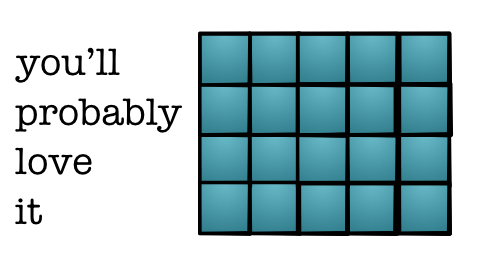
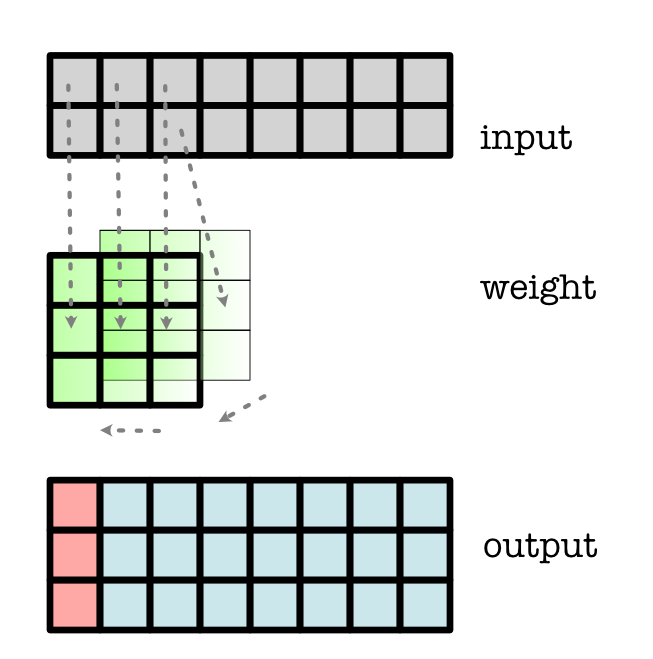

Module 4.1 - Convolution
Module 4.1
Convolution
Review: NLP
Data

Data

Loss
Same as our basic problem.

Embedding Table

Embedding One

Network
Reduction / "Pooling"

Full Model

Bag-of-Words
Each word contributes to final decision
Sacrifice order, gain parameter efficiency
Challenge
How do you handle some locality?
Pairs of neighboring words
Ideal
Neural network that looks at subset of the input.
Can learn features to spot patterns that come together.
Same model, different locations
Convolution
Very important neural network function
Highly efficient in parallel hardware
NLP

Convolution
Challenge
How do we handle locality in features?
Intuition
Same neural network as before
Brute force, run it everywhere
Hope to detect important patterns and combine them
Minitorch Convention
All convolutions are same size out as in.
(This is different than torch, but makes it easier)
View #1: Conv as sliding

Computation
Output Values
out[0] = w[0] * in[0] + w[1] * in[1] + w[2] * in[2]
out[1] = w[0] * in[1] + w[1] * in[2] + w[2] * in[3]
out[2] = w[0] * in[2] + w[1] * in[3] + w[2] * in[4]
...View #2: Conv as unrolling
Input:
input = minitorch.tensor([1, 2, 3, 4, 5, 6])"Unroll"
[[1, 2, 3],
[2, 3, 4],
[3, 4, 5],
[4, 5, 6],
[5, 6, 0],
[6, 0, 0]]Unrolled View
Unroll + matmul
weight = minitorch.tensor([5, 2, 3]).view(3, 1)
output = input @ weightOutput (1 * 5 + 2 * 2 + 3 * 3)
[18, ..., 30 ]View #3: Conv as Broadcast

Gradient
Gradient
Output Values
out[0] = w[0] * in[0] + w[1] * in[1] + w[2] * in[2]
out[1] = w[0] * in[1] + w[1] * in[2] + w[2] * in[3]
out[2] = w[0] * in[2] + w[1] * in[3] + w[2] * in[4]Gradient values
d_in[2] = w[0] * d_out[2] + w[1] * d_out[1] + w[2] * d_out[0]Conv Back - Input
Reverse the convolutional anchor

Gradient of Weight
Out Values
out[0] = w[0] * in[0] + w[1] * in[1] + w[2] * in[2]
out[1] = w[0] * in[1] + w[1] * in[2] + w[2] * in[3]
out[2] = w[0] * in[2] + w[1] * in[3] + w[2] * in[4]Gradient values
d_w[2] = d_out[0] * in[2] + d_out[1] * in[3] + d_out[2] * in[4]Conv Back - Weight

How do we implement?
Which parts can be done in parallel?
What needs to be loaded in?
Channels
Scaling
Conv above corresponds to 1 (hidden) feature.
We may want lots of different input and output features
Intuition
Each position may have multiple values
These may be meaningful - i
These may be learned - i.e. hidden states
Key Points
Convolution applied to all input channels in position
If weight is length K and there are 10 channels, the input to the linear is 10 * K.
Output channels are just like the output of the Linear.
NLP
Computation (input channels)
Output Values
out[0] = w[0, 0] * in[0, 0] + w[1, 0] * in[1, 0] + w[2, 0] * in[2, 0] \
w[0, 1] * in[0, 1] + w[1, 1] * in[1, 1] + w[2, 1] * in[2, 1]
...Computation (output channels)
Output Values
out[0, 0] = w[0] * in[0] + w[1] * in[1] + w[2] * in[2]
out[0, 1] = w2[1] * in[0] + w2[1] * in[1] + w2[2] * in[2]
...Graphical Representation
{kind=link}
View: Unroll
Pseudo, Code (note matmul on in_channels * K)
in = unroll(in, 3)
output = weight.view(out_channels, in_channels * 3) @ in.view(in_channels * 3, T)Implementation
All about understanding sizes.
Should be similar to matmul, start with output
If outside boundaries, use 0
Pooling
Challenge
How do we look at bigger areas with convolutions?
Issues
Number of parameters scale with weight size
"Bigger" patterns require more ways to split data.
Standard Reduction

"Pooling"
Reduction applied to each region:

Simple Implementation
Ensure that it is contiguous
Use View to "fold" the tensor

Why does folding work?
View requires "contiguous" tensor
View(4, 2) makes strides (2, 1)
Simple Implementation
Reduce along created fold

2D Pooling

2D Pooling
Need to isolate squares into a single dimension.
Tensor origami :)
Exercise
If I have a (10, 10) cube. How do I sum up neighboring rows?
Goal (5, 10) cube.
Fast Implementations?
If your reduce is on CUDA, can exploit small groups
I.e. Prefix sum for each group on one block.
Goal
Early layers: Capture basic shapes
Middle layers: How these connect
Later layers: Full objects